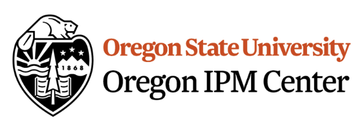

DDRP Pest Trends App
👥 Brittany Barker, Maxine Cruz
Oregon Integrated Pest Management Center, Oregon State University
Questions? 📧 Contact Brittany Barker at bbarker505@gmail.com or brittany.barker@oregonstate.edu
📜 Summary
DDRP Pest Trends is an interactive R Shiny application that visualizes long-term weather-related trends in pest phenology and climatic suitability across the contiguous United States (CONUS). The application uses outputs from the Degree-Days, Risk, and Phenological Event Mapping (DDRP) platform to evaluate how weather changes from 1981 to the present may influence the timing of pest activities and the potential distribution of invasive insect pests in CONUS. The application was developed by the Oregon IPM Center at Oregon State University in collaboration with the USDA Animal and Plant Health Inspection Service (APHIS) Plant Protection and Quarantine (PPQ) program.
Features
🗺️ Interactive Maps
Model predictions delivered by the app were produced by running DDRP models for each species for each year (i.e., 1981-2025) and then conducting time-series analyses on the model outputs to produce trend maps.
Users can explore spatial trends for:
- Phenology – changes in the timing of pest life-cycle events
- Climate stress – changes in cold and heat stress accumulations
- Climatic suitability – changes in the potential distribution of pests
Maps may be viewed for:
- Individual invasive pest species
- Cross-species comparisons
- Multiple geographic regions
- Different time periods
📌 Location-Based Information
- Summary statistics
- Time-series trend plots for each pest species
- Cross-species comparison plots
- Downloadable figures
📄 Pest Reports
Species-specific profiles including biology, distribution, host plants, economic importance, and interpretation of model predictions.
🪲 Species Included
The application currently includes models for 18 invasive insect pest species:
- Agrilus planipennis (Emerald ash borer)
- Anoplophora glabripennis (Asian longhorned beetle)
- Autographa gamma (Silver Y moth)
- Chilo suppressalis (Asiatic rice borer)
- Cryptoblabes gnidiella (Honeydew moth)
- Dendrolimus pini (Pine-tree lappet moth)
- Epiphyas postvittana (Light brown apple moth)
- Eurygaster integriceps (Sunn pest)
- Helicoverpa armigera (Old World bollworm)
- Lycorma delicatula (Spotted lanternfly)
- Monochamus alternatus (Japanese pine sawyer beetle)
- Neoleucinodes elegantalis (Small tomato borer)
- Phthorimaea absoluta (Tomato leaf miner)
- Platypus quercivorus (Oak ambrosia beetle)
- Popillia japonica (Japanese beetle)
- Spodoptera littoralis (Egyptian cottonworm)
- Spodoptera litura (Common/Cotton cutworm)
- Thaumatotibia leucotreta (False codling moth)
🌡️Data Sources
The application uses gridded daily temperature data from the PRISM Climate Group, including:
- Daily minimum temperature
- Daily maximum temperature
📚 Dependencies
The R packages used may be found in packages.R.
Requirements
Core Shiny Framework
shinybslibbsiconsshinyWidgetsshinyjsshinyBSshinydashboardshinycssloaders
Mapping and Spatial Analysis
leafletleaflet.extrasleafemleaflegendmapviewsfterra
Data Manipulation and Utilities
tidyversestringrlubridategluefsscalesmemoise
Statistical Analysis
modifiedmkmblm
Visualization
ggrepelviridisLite
Export and Reporting
htmlwidgetswebshot2
User Interface Styling
fresh
Installation
Clone the repository:
git clone https://github.com/bbarker505/DDRP_pest_trends.gitInstall required packages.
source("packages.R")Run the application:
shiny::runApp()📂 File / Folder Contents
File structure
DDRP_pest_trends/
│
├── app.R
├── ui.R
├── server.R
├── functions.R
├── packages.R
├── create_raster_lookup.R
├── styles.css
│
├── www/
│ ├── images/
│ ├── reports/
│ └── tutorial/
│
├── rasters/
│
└── data/
Additional folder and file descriptions
DDRP_trends_TUTORIAL.pdf: Provides instructions on how to navigate and use the web application.
[list app.R, etc]
rasters
CLMDDRPMK_trends
features
- Contains shapefiles of county lines in the United States.
www
- Contains images and logos used throughout the application.
Source Code
- https://github.com/bbarker505/DDRP_pest_trends
- https://github.com/bbarker505/ddrp_v3
🖺 Citation
If you use this application, please cite:
Barker, B. S., L. Coop, T. Wepprich, F. Grevstad, and G. Cook. 2020. DDRP: real-time phenology and climatic suitability modeling of invasive insects. PLoS ONE 15:e0244005
Barker, B. S., L. Coop, J. J. Duan, and T. R. Petrice. 2023. An integrative phenology and climatic suitability model for emerald ash borer. Frontiers in Insect Science. 3:1239173.
💵 Funding
Funding for this project was provided by:
- USDA National Institute of Food and Agriculture (NIFA)
- USDA APHIS PPQ Plant Protection Act 7721 Program
- Oregon State University Agricultural Research Fund
Last updated: June 2026
